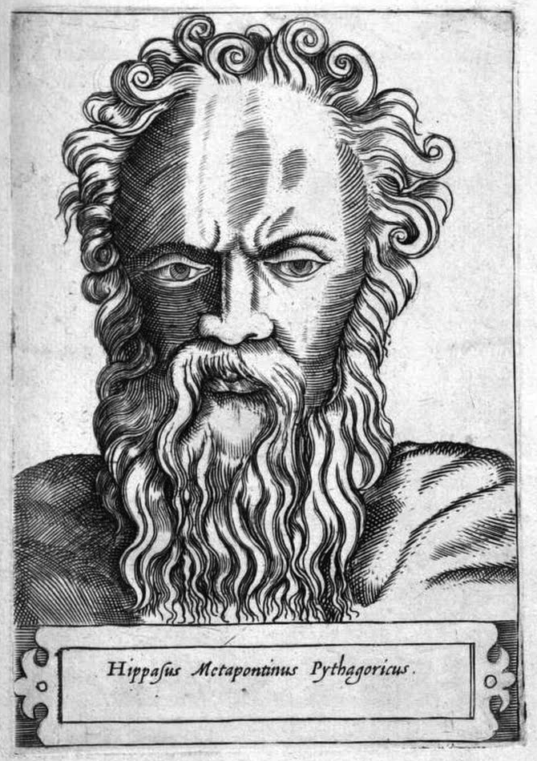
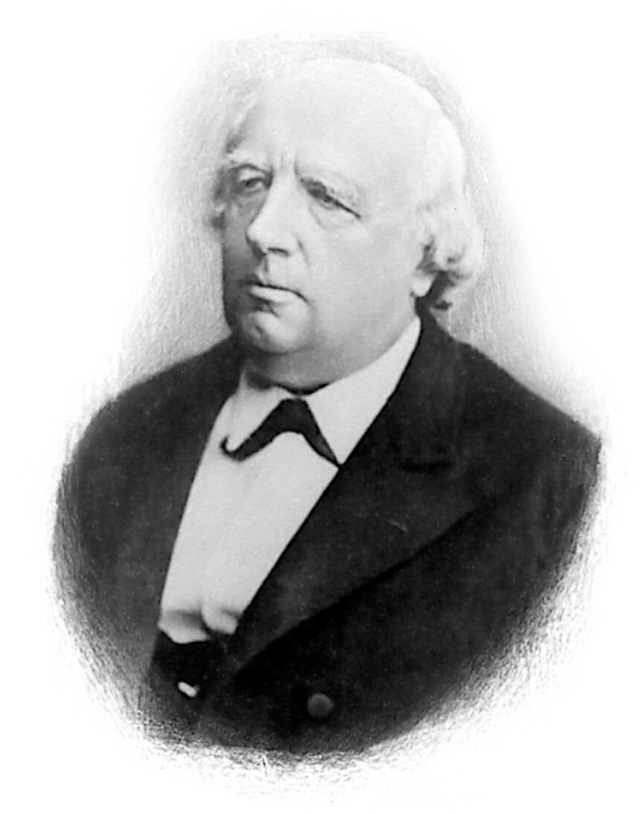
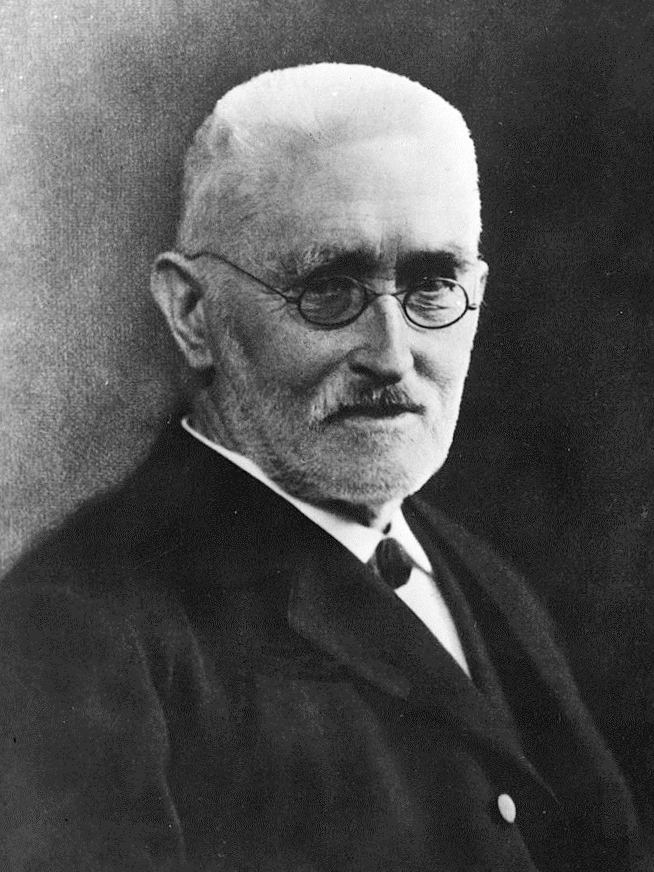

Week 1, Lecture 2: Numbers, Metric Properties, and Completeness
← Week 1 Overview Hub
Finding Your Footing: Numbers, Fractions, and Proofs
Welcome to Lecture 2! In our previous session, we established the grammatical foundation of sets and mappings. Today, we turn our attention to numbers—objects you have been working with since primary school. Yet, as we examine them through the lens of real analysis, familiar concepts will take on a deeper, more rigorous character.
You might wonder why we need formal proofs to establish things that feel intuitively obvious—such as the fact that between any two fractions, there is always another fraction, or that $\sqrt{2}$ cannot be written as a simple ratio of integers. After all, if our calculators and geometric intuition already tell us these things are true, why labor through the logic?
The reason is that intuition alone can hide subtle traps. The ancient Greeks were profoundly shocked to discover that the diagonal of a unit square ($\sqrt{2}$) slips entirely through the cracks of the rational numbers, revealing invisible "holes" in the number line. Proving these properties from first principles gives us absolute certainty, ensuring that when we eventually build limits and calculus upon these numbers, our foundation never shakes.
If constructing proofs by contradiction or working through algebraic inequalities feels challenging at first, take a deep breath—that is completely normal. Mathematical rigor is a craft acquired one careful step at a time. Take your time with the examples, explore the arguments, and remember that every expert analyst started exactly where you are now.
📌 Lecture 2 Topics
- 1. Natural Numbers & Induction (Peano's Axioms)
- 2. Density of the Rational Numbers
- 3. Rational Gaps and the Irrationality of $\sqrt{2}$
- 4. Axiomatic Field and Order Properties of $\mathbb{R}$
- 5. Absolute Value and Distance Metrics
- 6. Bounds, Suprema, and Completeness
- 7. The Grand Arc: Building the Solid Continuum
1. The Natural Numbers and Mathematical Induction
Before we examine fractions and the real number line, where do numbers begin? Mathematically, the set of natural numbers $\mathbb{N} = \{0, 1, 2, \dots\}$ is defined from the ground up using Peano's Axioms. Think of natural numbers as a connected chain or graph starting at root $0$ with no branching and no loops:
The Four Pillars of Peano's Axioms
- The Root: $0$ is a natural number.
- Successors (No Branching): Each natural number has exactly one unique successor.
- Uniqueness (No Loops): $0$ is not the successor of any natural number, and every other natural number is the successor of exactly one predecessor.
- Principle of Mathematical Induction: A statement is true for all natural numbers if we can prove it holds for $n = 0$ (the base case) and that assuming it holds for $n-1$, it necessarily holds for $n$.
Induction is our primary tool for proving properties across infinite sequences. Once we step beyond the counting numbers into fractions ($\mathbb{Q}$) and the unbroken real continuum ($\mathbb{R}$), we rely on these foundational rules to ensure our arithmetic never breaks down.
🎯 Worked Example: Your First Proof by Mathematical Induction
Let's prove the famous identity for the sum of the first $n$ positive integers for all $n \ge 1$:
Think of induction like toppling an infinite row of dominoes. We need two things: (1) knock down the very first domino, and (2) guarantee that each domino knocks down the next one.
- Base Case ($n = 1$):
Left side: $1$. Right side: $\frac{1(1 + 1)}{2} = \frac{2}{2} = 1$. Both sides match, so the first domino falls! - Inductive Hypothesis (Assume for $k$):
Assume the formula holds for some arbitrary natural number $k \ge 1$: $$1 + 2 + \dots + k = \frac{k(k + 1)}{2}$$ - Inductive Step (Prove for $k + 1$):
We want to show the sum up to $k + 1$ equals $\frac{(k + 1)((k + 1) + 1)}{2} = \frac{(k + 1)(k + 2)}{2}$.
Group the first $k$ terms using our assumption: $$(1 + 2 + \dots + k) + (k + 1) = \frac{k(k + 1)}{2} + (k + 1)$$ Factor out the common term $(k + 1)$: $$= (k + 1) \left(\frac{k}{2} + 1\right) = (k + 1)\left(\frac{k + 2}{2}\right) = \frac{(k + 1)(k + 2)}{2}$$ - Conclusion:
Since the base case holds and the truth of step $k$ inevitably forces step $k + 1$ to be true, the formula holds for all natural numbers $n \ge 1$ by the Principle of Mathematical Induction.
2. Density of the Rational Numbers
📖 Notation Reference: Number Sets & Bounds
If you ask someone whether fractions (rational numbers, $\mathbb{Q}$) fill up the number line, their first instinct is usually "Yes, absolutely." After all, how could you possibly find empty space between fractions when they are crammed together so tightly?
To build our intuition, let's look at a concrete example. Pick any two fractions—say, $0.3$ and $0.4$. Are they touching? Not at all! We can easily slip $0.35$ right between them. But why stop there? Between $0.3$ and $0.35$, we can place $0.31$, $0.32$, or $0.301$. In mathematics, this property of endless crowding is called density.
How Do We Prove This? (The Midpoint Trick)
Instead of guessing decimals, how do we prove this works for any two arbitrary fractions $a$ and $b$ where $a < b$? We use a wonderfully simple tool: the arithmetic midpoint.
If you add two numbers together and divide by $2$, you get the exact halfway point:
Because adding two fractions and dividing by a whole number always yields another fraction, $c_1$ is guaranteed to be a rational number. And because it's the exact average, it sits safely between $a$ and $b$ ($a < c_1 < b$).
Now, what happens if we take $a$ and our new midpoint $c_1$, and find their midpoint ($c_2 = \frac{a + c_1}{2}$)? We can repeat this zooming-in process endlessly, generating an infinite stack of unique fractions trapped between our original starting points:
Interactive Walkthrough: The Infinite Midpoint Nesting
Phase: Initial Interval [0.3, 0.4]1. What Is Happening
We start with interval $[0.3, 0.4]$. No fractions are plotted yet. The line appears continuous, but infinitely many rational points are waiting between the endpoints.
2. Why The System Does This
Demonstrating closure under division: any arithmetic average of two rationals is strictly guaranteed to generate a brand new, valid rational number.
🎯 Worked Example: Trapping Rationals Without Decimals
Suppose you are given two fractions that look right next to each other: $a = \frac{3}{7}$ and $b = \frac{4}{7}$. How do we find a rational number strictly between them without touching a calculator or using repeating decimals?
- Apply the Midpoint Formula: Add them together and halve the result: $$c_1 = \frac{a + b}{2} = \frac{\frac{3}{7} + \frac{4}{7}}{2} = \frac{\frac{7}{7}}{2} = \frac{1}{2}$$ Notice that $\frac{3}{7} = \frac{6}{14}$ and $\frac{4}{7} = \frac{8}{14}$. Our midpoint is $\frac{1}{2} = \frac{7}{14}$, which sits dead center: $$\frac{6}{14} < \frac{7}{14} < \frac{8}{14} \implies \frac{3}{7} < \frac{1}{2} < \frac{4}{7}$$
- Find a Second Intermediate Fraction: Take the midpoint between $a = \frac{6}{14}$ and $c_1 = \frac{7}{14}$: $$c_2 = \frac{\frac{6}{14} + \frac{7}{14}}{2} = \frac{\frac{13}{14}}{2} = \frac{13}{28}$$ Comparing fractions with a common denominator of $28$: $$\frac{12}{28} < \frac{13}{28} < \frac{14}{28} < \frac{16}{28} \implies \frac{3}{7} < \frac{13}{28} < \frac{1}{2} < \frac{4}{7}$$
Every arithmetic operation on integers and fractions produces another fraction. You can produce an infinite sequence of rational stepping stones between any two points simply by repeating this process!
💡 The Big Beginner Trap: Dense vs. Complete
It is completely natural for beginners to assume: "If fractions are infinitely dense, they must cover every single point on the number line, right?"
Surprise! That is the biggest trap in early analysis. Even though rational numbers are packed so tightly that you can never find two "touching" without another fraction between them, the rational line is riddled with microscopic holes. As we are about to discover in Section 3, numbers like $\sqrt{2}$ fall right through those invisible gaps!
3. Rational Gaps and the Irrationality of $\sqrt{2}$
In Section 2, we saw that the rational numbers ($\mathbb{Q}$) are dense—you can always squeeze another fraction between any two. It is tempting to look at that infinite crowding and assume the number line is completely solid. But ancient Greek mathematicians discovered a shocking geometric reality that shattered this illusion.
Imagine drawing a simple right-angled triangle with both legs measuring exactly $1$ unit. By Pythagoras' theorem, the length of the diagonal hypotenuse $c$ is given by $c^2 = 1^2 + 1^2 = 2$, which means $c = \sqrt{2}$. Where does this length live on our rational number line? Nowhere! Exactly where $\sqrt{2}$ belongs, there is an invisible pinprick hole.
Interactive Walkthrough: Smooth Zooming into the Void ($\sqrt{2}$)
Step 0: Macro View [1.40, 1.50]1. What Is Happening
We view the macro scale between $1.40$ and $1.50$. The red dashed line marks the exact location of $\sqrt{2}$.
2. Why The System Does This
Demonstrating coordinate limits: fractions can approach $\sqrt{2}$ infinitely closely without ever landing on the missing coordinate.
🎯 Why $\sqrt{2}$ isn't a fraction (Proof by Contradiction)
If proof by contradiction feels a bit like a legal loophole or a magic trick the first time you see it, take heart—that is completely normal! When we want to prove a negative statement (like "there is no fraction equal to $\sqrt{2}$"), a direct proof is practically impossible because we cannot check an infinite number of fractions one by one.
Proof by contradiction lets us outsmart infinity. Instead of searching an infinite haystack for a needle that isn't there, we use an indirect four-step method (Reductio ad Absurdum):
- Assume the opposite: Temporarily assume the statement we want to prove is false (e.g., assume $\sqrt{2}$ is a fraction).
- Follow the logic: Rigorously apply valid mathematical rules and algebra.
- Hit a contradiction: Reach an impossible mathematical paradox (e.g., proving an even number equals an odd number).
- Conclude: Since valid logic can never produce a contradiction, our initial assumption must have been false, proving the original statement true!
To prove mathematically that no fraction can ever plug this hole, let's apply this method to $\sqrt{2}$:
Assume $\sqrt{2}$ could be written as a simplified fraction $\frac{p}{q}$ for integers $p$ and $q$ (with $q \neq 0$ and no common factors). Squaring both sides gives:
Think about prime factorizations. When you square any whole number, all its prime factors double in count, meaning every perfect square must contain an even number of prime factors (counting multiplicities).
Therefore, $p^2$ has an even number of prime factors. But look at $2q^2$: $q^2$ has an even number, and multiplying by one extra $2$ makes it an odd number! An even number can never equal an odd number ($2n \neq 2k+1$). This inescapable contradiction proves that our starting assumption was false: $\sqrt{2}$ cannot be a fraction ($\sqrt{2} \notin \mathbb{Q}$).
🏛️ The Scandal of Incommensurability: Hippasus of Metapontum

Hippasus of Metapontum(c. 5th Century BCE)
Hippasus of Metapontum was an early Greek philosopher and member of the Pythagorean brotherhood. The Pythagoreans held a mystical doctrine that "all is number", believing that every geometric magnitude in the cosmos could be expressed as an exact ratio of integers.
Shattering the World of Fractions: While examining the simplest geometric figure imaginable—a unit square with side lengths of $1$—Hippasus evaluated the diagonal hypotenuse $\sqrt{1^2 + 1^2} = \sqrt{2}$. Using an early geometric version of the parity contradiction shown above, he proved the diagonal is incommensurable with the sides: no common sub-unit exists that divides evenly into both.
By proving that $\sqrt{2} \notin \mathbb{Q}$, Hippasus revealed that the rational numbers leave gaping, invisible pinprick holes along the number line. According to mathematical lore, the discovery so severely undermined Pythagorean cosmology that Hippasus was taken out to sea and thrown overboard for heresy.
4. Axiomatic Field and Order Properties of $\mathbb{R}$
When we patch the gaps in the rational numbers $\mathbb{Q}$ to build the real numbers $\mathbb{R}$, we want to make sure our new number line behaves nicely. We don't want arithmetic to act unpredictably or inequalities to contradict themselves.
To guarantee this, mathematicians define $\mathbb{R}$ as a complete ordered field. That sounds like intimidating vocabulary, but it simply means $\mathbb{R}$ is built on three common-sense promises:
- It's a "Field" (The Arithmetic Promise): You can add, subtract, multiply, and divide freely, and all the familiar rules of algebra work. The arithmetic playground always plays fair. (Explore a deep dive on Groups, Rings, and Fields →)
- It's "Ordered" (The Direction Promise): Numbers have a strict, consistent left-to-right direction. Every number is either smaller than, equal to, or greater than any other number, and inequalities behave predictably when you shift or scale them.
- It's "Complete" (The No-Holes Promise): Remember the invisible pinprick hole we found at $\sqrt{2}$ in the rational numbers ($\mathbb{Q}$)? Completeness means there are zero holes left on the line. Every set of numbers that has an upper ceiling has a tightest possible ceiling sitting right inside the system, plugging every gap permanently.
🌱 Why is this foundation so important?
Without these three guarantees, calculus as we know it would collapse:
• Without Completeness, limits could march endlessly toward a target value (like zooming in on $\sqrt{2}$) only to fall through a missing hole because the destination doesn't exist in the number system.
• Without Order, inequalities and directions would become unstable, making it impossible to define closeness or continuity.
• Without the Field rules, basic algebraic manipulation (like expanding brackets or solving equations) would break down into unpredictable exceptions.
Demanding that $\mathbb{R}$ be a complete ordered field gives us a flawless, unbroken bedrock where calculus can stand safely.
Let's break down how these three promises translate into everyday rules you can trust:
1. The Field Rules (Fair Arithmetic)
Think of this as the basic grammar of addition and multiplication. These are rules you have trusted your whole life:
- Swapping (Commutativity): Changing the order of addition or multiplication never changes the final answer ($a + b = b + a$ and $ab = ba$).
- Grouping (Associativity): Where you place parentheses when adding or multiplying multiple numbers doesn't matter ($(a + b) + c = a + (b + c)$).
- Expanding (Distributivity): Multiplication distributes smoothly across addition ($a(b + c) = ab + ac$). As visualized in the area model below, multiplying a total width of $(3 + 4)$ by a height of $2$ is identical to adding the two individual box areas ($2 \times 3 + 2 \times 4$).
- Undoing (Inverses): Every number has an opposite that neutralizes it to zero ($a + (-a) = 0$), and every non-zero number has a reciprocal that multiplies to one ($a \cdot a^{-1} = 1$).
2. The Trichotomy Law (Strict Comparison)
Have you ever wondered how numbers relate to each other on a line? The Trichotomy Property guarantees that if you pick any two real numbers $a$ and $b$, there is never any confusion or ambiguity about where they stand. Exactly one of three things must always be true:
- $a < b$ ($a$ sits strictly to the left of $b$)
- $a = b$ ($a$ and $b$ occupy the exact same point)
- $a > b$ ($a$ sits strictly to the right of $b$)
As illustrated below relative to a fixed reference point $b$, any candidate number $a$ must fall into one of these three mutually exclusive zones:
3. Order Rules (Predictable Inequalities)
When we work with inequalities, we need to know that shifting or scaling our numbers won't break logical sense. Let's examine each rule paired with its own visual diagram:
A. Chaining Order (Transitivity)
If $a > b$ and $b > c$, then $a > c$. If your budget is higher than Alice's, and Alice's is higher than Bob's, yours is definitely higher than Bob's.
B. Adding the Same Amount
If $a > b$, adding the same number $c$ to both sides preserves the inequality ($a + c > b + c$). Whoever had more beforehand still has more after a shared shift!
C. Multiplying by a Positive Number
If $a > b$ and you scale both sides by a positive number $c$, the inequality remains unchanged ($ac > bc$ when $c > 0$).
D. Multiplying by a Negative Number (The Famous Flip)
If $a > b$ and you multiply both sides by a negative number $c$, the inequality symbol flips around ($ac < bc$ when $c < 0$). As shown below, multiplying by $-1$ mirrors the entire number line!
🎯 Worked Example: Why Squares Are Always Non-Negative ($x^2 \ge 0$)
We all know that $(-3)^2 = 9 > 0$ and $3^2 = 9 > 0$. But how do we prove from pure axioms that $x^2 \ge 0$ for every real number $x$, without making assumptions about arithmetic?
We use the Trichotomy Property. For any real number $x$, exactly one of three cases must be true:
- Case 1 ($x = 0$): By field properties of zero, $x^2 = 0 \times 0 = 0$. Since $0 \ge 0$, the claim holds.
- Case 2 ($x > 0$): If $x$ is positive, we multiply both sides of the inequality $x > 0$ by the positive number $x$ (Order Rule C: Multiplying by a positive preserves order): $$x \cdot x > 0 \cdot x \implies x^2 > 0$$
- Case 3 ($x < 0$): If $x$ is negative, we multiply both sides of the inequality $x < 0$ by the negative number $x$ (Order Rule D: Multiplying by a negative flips the symbol): $$x \cdot x > 0 \cdot x \implies x^2 > 0$$
By Trichotomy, there are no other possibilities. Therefore, $x^2 \ge 0$ for all $x \in \mathbb{R}$, with equality if and only if $x = 0$. From this single deduction flows almost all of optimization, quadratic equations, and metric distances!
🏛️ Banishment of the Infinitesimal: Eudoxus of Cnidus
(c. 408–355 BCE)
Eudoxus of Cnidus was an ancient Greek astronomer, scholar, and mathematician, widely considered antiquity's greatest geometer alongside Archimedes. Following the crisis of incommensurability sparked by Hippasus, Greek geometry was paralyzed because existing proofs relied on integer ratios that failed for irrational lengths.
The Theory of Proportions: Preserved in Book V of Euclid's Elements, Eudoxus formulated a rigorous definition of proportion that applied equally to rational and incommensurable magnitudes. Crucially, he established what we now know as the Archimedean Property: any two positive quantities can exceed one another if either is added to itself a sufficient number of times.
In modern analysis, this guarantees that the real line contains no non-zero "infinitely small" ghosts. No matter how small an interval $\epsilon > 0$ is chosen, taking enough discrete steps of size $\epsilon$ will inevitably outrun any finite number, establishing an essential bridge between discrete counting and continuous space.
5. Absolute Value and Distance Metrics
In everyday speech, when someone says "take the absolute value," the rule of thumb you probably learned was simply: "throw away the minus sign." For example, $|5| = 5$ and $|-5| = 5$.
While that rule of thumb is fine for quick mental arithmetic, real analysis asks you to look at absolute value through a much more powerful lens: geometry and physical distance. If you place a tape measure between two marks on a workbench, the distance is never negative, regardless of whether you measure from left to right or from right to left.
1. How Absolute Value is Defined (The Split-Formula)
To express this rigorously without relying on informal words like "drop the sign", mathematics defines the absolute value function $|x|: \mathbb{R} \to \mathbb{R}$ piecewise:
Notice what happens when $x$ is negative: if $x = -4$, then $-x = -(-4) = +4$. The extra minus sign cancels out the negativity, guaranteeing the final output is always non-negative.
2. Distance Between Two Points along the Line
When you measure the distance between any two coordinates $a$ and $b$ on the number line, you simply take the difference between them inside an absolute value:
Because $|a - b| = |b - a|$, distance is completely symmetric: the distance from Alice at $2$ to Bob at $6$ is $|2 - 6| = |-4| = 4$, and the distance from Bob to Alice is $|6 - 2| = |4| = 4$.
3. Measuring "Closeness": $\varepsilon$-Neighbourhoods
Here is where real analysis truly begins. In calculus, when we say "$x$ is getting closer and closer to $a$," how do we write that with mathematical precision? We use the Greek letter epsilon ($\varepsilon$) to represent an arbitrarily small positive margin of error.
We say that $x$ is $\varepsilon$-close to $a$ if the distance between them is strictly less than $\varepsilon$:
Notation note: The double arrow $\iff$ stands for "if and only if" (logical equivalence). It simply means the statement on the left and the statement on the right are two different ways of saying the exact same truth: if one holds, the other automatically holds!
Geometrically, this creates an open safety buffer centered right at $a$, reaching $\varepsilon$ units to the left and $\varepsilon$ units to the right. In analysis, this open interval $(a - \varepsilon, a + \varepsilon)$ is called the $\varepsilon$-neighbourhood of $a$.
📐 Why is it called the "Triangle" Inequality?
Have you ever wondered why an algebraic rule about numbers on a flat line is named after a triangle?
In geometry, the shortest distance between two points is a direct straight line. If you start at point $A$ and want to go to $C$, walking directly along side $c$ will always be shorter than taking a detour through point $B$ (walking $a + b$). In any physical triangle, no single side can ever be longer than the other two sides combined:
On the real number line, this triangle is simply flattened into one dimension. If $a$ and $b$ pull in opposite directions (like $-2$ and $+4$), their cancellation shrinks the net result to $|-2 + 4| = 2$, which is strictly smaller than walking the full detour distance $|-2| + |4| = 6$. The only time equality holds ($|a + b| = |a| + |b|$) is when both numbers push in the exact same direction!
🔄 The Reverse Triangle Inequality: Setting the Floor
The forward triangle inequality gives you a ceiling: the direct journey $|a - b|$ can never be longer than $|a| + |b|$. But does it have a floor? Can the distance between two points shrink to zero if the two sticks have different lengths?
Of course not! If one stick has length $10$ and another stick has length $3$, the third side of any triangle connecting them must be at least $10 - 3 = 7$ units long, even if you fold them flat against each other. This is the Reverse Triangle Inequality:
The 2-Line Sneaky Proof: You don't need a whole new framework to prove this—it falls out of the forward triangle inequality with a clever substitution! Write $a$ as $(a - b) + b$:
Swapping the roles of $a$ and $b$ gives $|b| - |a| \le |a - b|$ as well. Putting those two bounds together wraps the difference into absolute values: $||a| - |b|| \le |a - b|$!
- Positivity: $|a| \ge 0$ for all $a$, and $|a| = 0$ if and only if $a = 0$ (a point is distance zero only from itself).
- Multiplication: $|ab| = |a| \cdot |b|$ (scaling preserves distance).
- Squaring: $|a|^2 = a^2$ (squaring eliminates negative signs naturally).
- Triangle Inequality: $|a + b| \le |a| + |b|$ (the direct path is always shorter than or equal to detour routes).
- Reverse Triangle Inequality: $||a| - |b|| \le |a - b|$ (the distance between points is always at least the difference of their lengths).
📐 Proving the Triangle Inequality Without Tears
Why does $|a + b| \le |a| + |b|$ hold for all real numbers? Remember that every real number $x$ is trapped between its negative and positive absolute value:
Now test what happens to the sum $a + b$:
- If $a + b \ge 0$, then $|a + b| = a + b$. Since $a \le |a|$ and $b \le |b|$, adding them gives $a + b \le |a| + |b|$.
- If $a + b < 0$, then $|a + b| = -(a + b) = (-a) + (-b)$. Since $-a \le |a|$ and $-b \le |b|$, adding them yields $-(a + b) \le |a| + |b|$.
In both cases, $|a + b|$ never exceeds $|a| + |b|$!
🎯 Worked Example: Solving an Absolute Value Inequality Geometrically
Find all real numbers $x$ that satisfy:
Instead of treating this as blind algebra, let's solve it both algebraically and geometrically as a neighbourhood:
- Method 1: Unpacking the Double Inequality ($\iff$):
Using the property $|u| < d \iff -d < u < d$: $$-4 < 2x - 6 < 4$$ Add $6$ across all three parts (Order Rule B: Adding preserves order): $$-4 + 6 < 2x < 4 + 6 \implies 2 < 2x < 10$$ Multiply by $\frac{1}{2} > 0$ (Order Rule C: Multiplying by positive preserves order): $$1 < x < 5$$ The solution set is the open interval $(1, 5)$. - Method 2: Geometric Neighbourhood View:
Factor out $2$ from the absolute value: $$|2(x - 3)| < 4 \implies 2|x - 3| < 4 \implies |x - 3| < 2$$ Read this directly as a distance statement: "The distance from $x$ to $3$ is strictly less than $2$."
Start at the center $a = 3$, take a radius $\varepsilon = 2$ to the left ($3 - 2 = 1$), and a radius $\varepsilon = 2$ to the right ($3 + 2 = 5$). This immediately describes the interval $(1, 5)$ without doing any algebra!
🏛️ The Architect of Rigor: Karl Weierstrass

Karl Weierstrass(1815–1897)
Karl Weierstrass was a German mathematician universally regarded as the "father of modern analysis." For the first two centuries following Newton and Leibniz, calculus relied heavily on physical intuition, moving particles, and geometric graphs—descriptions that frequently collapsed when dealing with pathological curves.
Absolute Value as a Metric: Weierstrass realized that rigorous analysis required eliminating vague kinematic phrases like "approaches" or "gets infinitely close." He replaced them with static, algebraic inequalities centered entirely on the absolute value function $|x - y|$.
By defining closeness through exact distance bounds ($|f(x) - L| < \epsilon$ whenever $|x - c| < \delta$), Weierstrass transformed the absolute value from a mere sign-stripping operation into the primary measuring tape of pure mathematics. Properties like the Triangle Inequality became the workhorses that prove whether sequences converge and functions stay continuous.
6. Bounds, Suprema, and Completeness
Up to this point, we have established arithmetic rules and measured distances between numbers. But we now arrive at the true crown jewel of introductory real analysis: Completeness.
In Section 3, we discovered that the rational numbers $\mathbb{Q}$ have missing coordinates like $\sqrt{2}$. We promised that the real numbers $\mathbb{R}$ "patch" all of these invisible pinpricks. But how do mathematicians describe an unbroken continuum without using hand-wavy words like "no holes"?
The answer lies in two deceptively simple concepts: ceilings (bounds) and tightest ceilings (suprema).
1. Ceilings and Floors: Upper and Lower Bounds
Imagine a collection of numbers sitting inside a set $S \subseteq \mathbb{R}$. Think of an upper bound as any ceiling that hangs above every single member of the set:
- Upper Bound: A number $K$ is an upper bound of $S$ if $x \le K$ for every $x \in S$. If such a number exists, we say $S$ is bounded above.
- Lower Bound: A number $k$ is a lower bound of $S$ if $k \le x$ for every $x \in S$. If such a number exists, we say $S$ is bounded below.
- Bounded Set: A set that has both a floor and a ceiling (bounded below and above simultaneously).
The Ceiling Ambiguity: Notice that ceilings are never unique! If you are standing in a room with a 3-metre ceiling, a 10-metre ceiling is also safely above your head, as is a 100-metre ceiling. If $K$ is an upper bound, any larger number $K' > K$ is automatically an upper bound too.
A set has a maximum only if the highest ceiling actually belongs to the set itself ($M \in S$).
- For the closed interval $[0, 1]$, the number $1$ is inside the set. So $\max([0, 1]) = 1$.
- Now look at the open interval $(0, 1) = \{x \in \mathbb{R} \mid 0 < x < 1\}$. What is the largest number in this set? Is it $0.9$? No, $0.99$ is bigger. Is it $0.9999$? No, $0.99999$ is bigger!
The open interval $(0, 1)$ gets infinitely close to $1$ without ever touching it. Therefore, $(0, 1)$ has no maximum! This reveals why we need a sharper tool than just maximums and minimums.
2. The Tightest Bounds: Supremum ($\sup$) and Infimum ($\inf$)
Since upper bounds can be unnecessarily tall (like choosing a ceiling a kilometer high), analysts ask: "What is the lowest, tightest possible ceiling you can place over the set without cutting into it?"
- It is an upper bound: $x \le s$ for all $x \in S$.
- It is the lowest upper bound: If $K$ is any other upper bound of $S$, then $s \le K$.
Similarly, the infimum ($t = \inf S$) is the greatest lower bound—the highest possible floor supporting the set from below.
The Crucial Difference: While $(0, 1)$ has no maximum, its supremum exists and is exactly $1$ ($\sup(0, 1) = 1$). A supremum acts as a generalized maximum: if the maximum exists, it equals the supremum; if the maximum does not exist, the supremum still pins down the exact border where the set ends!
3. The Axiom of Completeness: What Makes $\mathbb{R}$ Solid
Now we can formulate the bedrock principle that separates the rational numbers from the real numbers:
Every non-empty subset $S \subseteq \mathbb{R}$ that is bounded above has a supremum sitting right inside $\mathbb{R}$.
In plain language: if a set of real numbers has any ceiling at all, it is guaranteed to have an exact, tightest ceiling that belongs to the real number continuum.
Why Rational Numbers $\mathbb{Q}$ Fail Completeness
Consider the set of rational numbers whose squares are less than $2$:
Is $S$ bounded above in $\mathbb{Q}$? Absolutely. The rational numbers $2$, $1.5$, and $1.42$ are all valid rational ceilings.
Does $S$ have a least upper bound inside $\mathbb{Q}$? No! The tightest ceiling wants to sit at exactly $\sqrt{2}$. But as we proved in Section 3, $\sqrt{2}$ is not rational! If you choose any rational upper bound slightly larger than $\sqrt{2}$ (like $1.415$), you can always find another rational upper bound even closer (like $1.4143$). Because the target point is missing from $\mathbb{Q}$, the ceiling falls right through the hole!
4. The Archimedean Property: No Infinitely Large Numbers
Completeness guarantees there are enough numbers to plug every gap. But how do we ensure there aren't too many numbers (like mysterious infinitely large elements sitting beyond all natural counting)?
This is settled by the Archimedean Property of the real numbers:
In simple terms: no matter how tiny a step $x$ you take (say, a millimeter), and no matter how huge a mountain $y$ stands before you (the distance to the moon), taking sufficiently many repeated steps ($nx$) will eventually surpass $y$. The natural numbers $\mathbb{N}$ march without boundary across all of $\mathbb{R}$.
🎯 Worked Practice: Finding Bounds, Suprema, and Maximums
Let's test these concepts on three representative sets:
- Supremum & Maximum: The largest term is $1$. Because $1 \in S$, we have $\sup S = 1$ and $\max S = 1$.
- Infimum & Minimum: As $n$ grows, terms shrink closer and closer to $0$. Since all terms are positive, $0$ is a lower bound, and no positive number can be a lower bound. Hence $\inf S = 0$. However, $\frac{1}{n}$ is never actually zero, so $\min S$ does not exist!
- Left side: $-2$ is in the set, so $\inf S = -2$ and $\min S = -2$.
- Right side: $5$ is the least upper bound, so $\sup S = 5$. But $5 \notin S$, so $\max S$ does not exist.
- $\mathbb{N}$ has a floor: $\inf \mathbb{N} = 0$ and $\min \mathbb{N} = 0$.
- By the Archimedean property, $\mathbb{N}$ is unbounded above. Therefore, $\sup \mathbb{N}$ does not exist as a real number (we say $\sup \mathbb{N} = +\infty$).
7. The Grand Arc: Building the Solid Continuum
Looking back across today's lecture, what seemed at first glance like separate technical topics—domino induction proofs, rational midpoint averages, $\sqrt{2}$ contradictions, distance metrics, and ceilings—was actually a single, coordinated campaign to answer one profound mathematical question: "What does it actually mean for a line to be solid, unbroken, and continuous?"
Consider how each layer builds upon the last:
- Counting Isn't Enough ($\mathbb{N}$ & $\mathbb{Z}$): Peano's axioms give us a rigid, discrete ladder of whole numbers, but the gaps between steps are wide open chasms.
- Density Feigns Solidity ($\mathbb{Q}$): Repeated midpoints cram infinitely many fractions between any two marks. The line appears continuous, but this is a deceptive optical illusion.
- Geometry Exposes the Holes ($\sqrt{2}$): The simple diagonal of a unit square drops into an empty void. Dense as they are, fractions are riddled with an infinity of missing coordinates.
- Metrics Measure Closeness ($|x - y|$): Absolute value provides a physical ruler. $\varepsilon$-neighbourhoods give us the language to say two points are "approaching" without touching.
- Completeness Solidifies the Line ($\mathbb{R}$): The Axiom of Completeness guarantees that every bounded set has a supremum, permanently sealing every microscopic hole in the continuum.
Why Calculus Depends on This Bedrock
Without the Axiom of Completeness, the most fundamental theorems of calculus would completely fall apart:
- The Intermediate Value Theorem would fail: A curve moving from negative to positive could slip straight through the hole at $\sqrt{2}$ without ever touching zero! On the rational line, $f(x) = x^2 - 2$ changes sign without ever equaling zero.
- The Extreme Value Theorem would fail: Continuous functions on bounded intervals would not be guaranteed to attain a maximum, because the peak might attempt to land on a missing point.
- Sequences would collapse: Sequences marching steadily toward a target (Cauchy sequences) could evaporate into thin air because their destination does not exist.
By defining the real numbers $\mathbb{R}$ as a complete ordered field, we have constructed an unbroken, flawless stage. Next week, when we let sequences run along this continuum, we can be completely confident that wherever they converge, a real number will always be waiting to catch them.
🏛️ Slicing the Continuum: Richard Dedekind

Richard Dedekind(1831–1916)
Richard Dedekind was a German mathematician who made foundational contributions to abstract algebra and number theory. In 1858, while preparing lecture notes for an introductory calculus class at the Polytechnic in Zürich, he was deeply troubled to discover that while textbooks spoke constantly of the "continuous real line," mathematics possessed no rigorous definition of what continuity actually meant.
Dedekind Cuts: In his landmark 1872 treatise Stetigkeit und irrationale Zahlen (Continuity and Irrational Numbers), Dedekind asked: What is the fundamental property of a line that has no gaps? His insight was that any knife cut dividing the real numbers into left and right halves must pass through an exact boundary point.
When slicing the rational numbers $\mathbb{Q}$ at $\sqrt{2}$, however, the knife passes through nothing: the left set has no maximum, and the right set has no minimum. Dedekind showed that by defining irrational numbers as the cuts themselves, we fill every microscopic pinprick hole in $\mathbb{Q}$, guaranteeing that every bounded set has a supremum and completing the continuum $\mathbb{R}$.